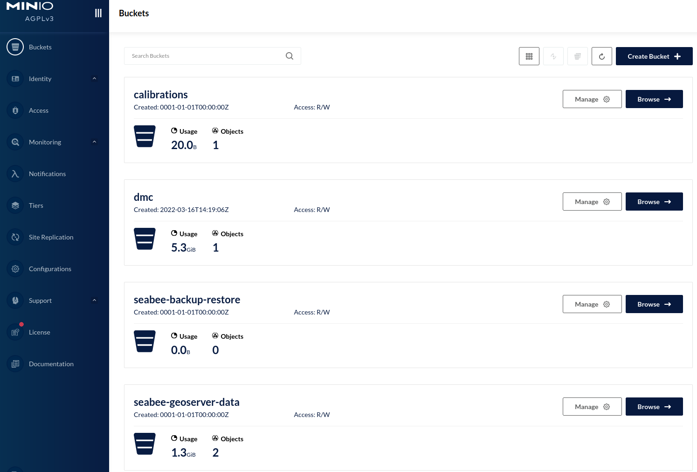

Storage
1 Overview
Access to SeaBee data is provided by MinIO, which offers high-performance, S3-compatible object storage. At the highest level, files within MinIO are organised into buckets. For example, there are currently buckets for niva, nina, ntnu etc. Within these, files are organised within folders and sub-folders, just like a standard file system. At present, each organisation is responsible for organising their data in a way that fits with their existing workflows.
Eventually, we will define a common file and folder structure for all SeaBee data, as this will make it easier to automate common SeaBee tasks.
To access data on MinIO, you first need to create an account. You can then login to the SeaBee MinIO web interface (Figure 1) and browse files in a similar way to e.g. DropBox or GoogleDrive. If you need to work with SeaBee data from your code, there is also an S3-compatible storage endpoint at https://storage.seabee.sigma2.no (see Section 3 for details).
2 Backups
Files stored on NIRD follow the regular backup schedule described here. For the GeoNode databases, backups should be dumped to the seabee-backup-restore bucket (which is then backed-up via the standard NIRD regime).
3 Working with files
There are several options for interacting with files stored on MinIO.
3.1 MinIO web interface
The minio console located at https://minio.seabee.sigma2.no/login provides a graphical interface to browse, upload and download files (Figure 1).

To upload data, navigate to the location you wish to add data to, click Upload, then select either Upload Folder or Upload File. To download, mark the desired folder/files using the checkboxes and click Download.
3.2 Machine Access
To accesss the S3 API on https://storage.seabee.sigma2.no you first need a service account (generated here).
3.2.1 Python
All python libraries supporting the S3 API will be able to interact with the MinIO storage. One good option for Python is the S3Fs library. The seabeepy package also includes convenience functions designed to make it easier to manipulate SeaBee data hosted on MinIO from Python code. See, for example, the copy_file, delete_file, copy_folder and delete_folder functions in the seabeepy.storage module.
3.2.2 Rclone
Rclone provides a convenient way of synchronising files local -> cloud or cloud -> cloud. Rclone keeps track of the transferred files and will retry if the connection is interrupted. It is therefore the best option for experienced/advanced users wishing to add large volumes of imagery to Sigma2.
3.2.2.1 Setup
To install rclone follow the instructions for your operating system, it is a single excutable that you can download.
The quickest way to add SeaBee’s MinIO storage as an rclone “remote” is to edit/create the rclone.conf file. Check the location of this file by running the command
rclone config fileIf the file does not exist, create it, then add this section
[seabee-minio]
type = s3
provider = Minio
access_key_id = <ACCESS_KEY_ID>
secret_access_key = <SECRET_ACCESS_KEY>
endpoint = storage.seabee.sigma2.nowhere <ACCESS_KEY_ID> can be your user name or a service account, and <SECRET_ACCESS_KEY> is the accompanying password.
To check that everything is working run this command
rclone lsd seabee-minio:which should list the buckets on MinIO.
The configuration setup can also be completed by following rclone’s interactive configuration session. This can be started using
rclone configFor most options, just accept the default. The storage type to select is S3 compliant (i.e. option 5) and the endpoint is storage.seabee.sigma2.no. This also allows you to setup a wide range of other remotes.
It is convenient to setup autocomplete for rclone, so it completes commands and paths when you press TAB.
3.2.2.2 Usage
See the Rclone documentation for a full list of available commands. For SeaBee, the most useful commands are likely to be rclone mount --read-only, rclone copy and rclone sync, in addition to standard OS commands such as ls and mkdir.
rclone help is also useful.